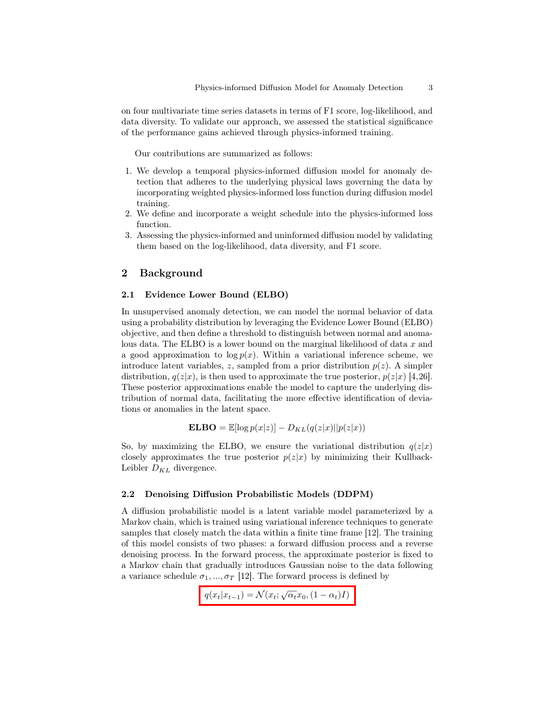

formula_002 — Page 3
BBox: [0.368, 0.825, 0.639, 0.843]
Section: Related Work (conf=medium)
Section Reason: reading_order_context: page 3
Block Source: mineru25pro
Final Origin: mineru_latex
Canonical Match: YES
Risk Flags: NONE
Formula M2 Ready: YES

Overlay (page 3)
Nearby Text Before:
EMPTY
Nearby Text After:
EMPTY
MinerU LaTeX:
q (x _ {t} | x _ {t - 1}) = \mathcal {N} (x _ {t}; \sqrt {\alpha_ {t}} x _ {0}, (1 - \alpha_ {t}) I)
Canonical Block:
q (x _ {t} | x _ {t - 1}) = \mathcal {N} (x _ {t}; \sqrt {\alpha_ {t}} x _ {0}, (1 - \alpha_ {t}) I)